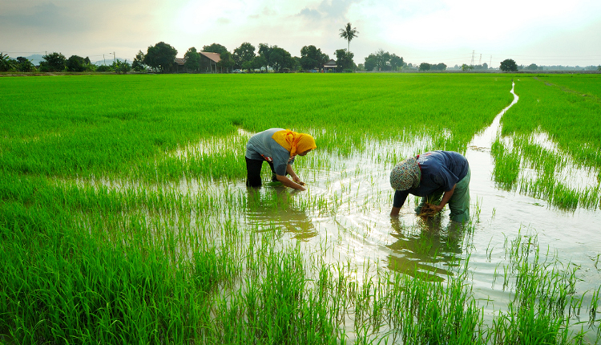
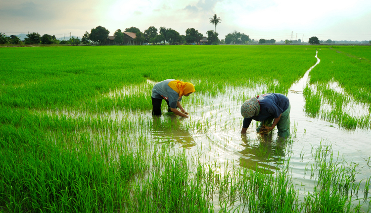

Welcome to the Natural Resources of Egypt
Discover the rich and diverse natural resources of Egypt, from its precious minerals to its fertile lands. Egypt is a land of ancient treasures and modern wealth, with resources that have been utilized for millennia to support its people and economy.
Key Resources
Minerals
Egypt is rich in a variety of minerals, including gold, copper, granite, limestone, iron, and natron. These minerals have been mined and used in construction, jewelry, and various industries since ancient times.
Agricultural Land
Egypt's agricultural sector is diverse, producing crops such as sugar beet, sugar cane, cotton, corn, pepper, okra, oranges, tangerines, dates, rice, grapes, guava, mangoes, bananas, pears, olives, apples, plums, peaches, and figs. The Nile Delta and Valley provide fertile soil that supports this vast array of crops.
Waste Water Plants
Wastewater treatment plants in Egypt play a crucial role in water management, ensuring that water resources are reused and conserved. These plants help in reducing water pollution and providing clean water for agricultural and industrial use.
Egyptian Oases
Egypt's oases, such as the Siwa Oasis, are vital for their unique ecosystems and agricultural productivity. They provide a habitat for various species and are important centers for date palm cultivation and other agricultural activities.
Natural Protectorates of Egypt
Egypt has several natural protectorates categorized into coastal, wetlands, geological, and desert protectorates. These areas are designated to conserve biodiversity, protect endangered species, and maintain natural heritage.
Tree Pruning Sources
Tree pruning is essential in Egypt for maintaining healthy tree growth and productivity. Proper pruning techniques help in managing urban forests, orchards, and maintaining the ecological balance.
Water Areas and Nile River
The Nile River is the lifeline of Egypt, providing water for drinking, irrigation, and supporting various ecosystems. Additionally, Egypt has several other important water bodies, including lakes and coastal areas, that contribute to its natural resource base.
Gallery

 
